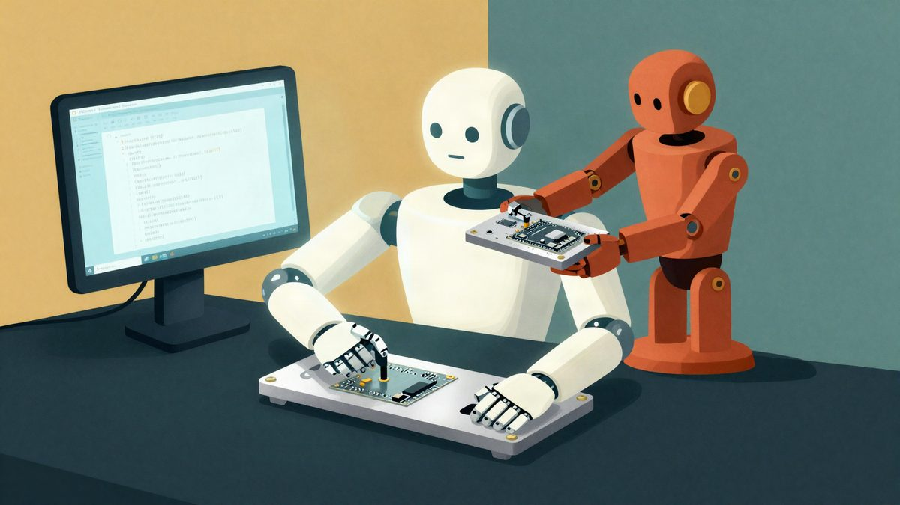
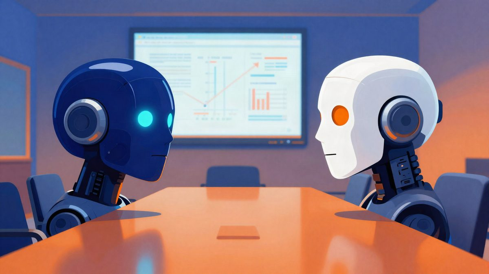

Cursor priznao da je Composer 2 izgrađen na Moonshotovu modelu Kimi

Cursor je predstavio Composer 2 kao model s "frontier-level" razinom programiranja, a korisnik na X-u uočio je da se temelji na Kimiju, otvorenom modelu tvrtke Moonshot AI. Cursor je to potvrdio i priznao da je bila greška što Kimi nije spomenuo u objavi. Prema Cursoru, otprilike četvrtina računalnih resursa potrošenih na završni model dolazi iz Kimija, a ostatak iz njegova treniranja.
Cursor je potvrdio da je njegov novi model za programiranje Composer 2 nastao na temelju otvorenog modela Kimi kineske tvrtke Moonshot AI. U objavi o lansiranju nije spomenuo ni Moonshot ni Kimi. Composer 2 predstavio je kao model s "frontier-level coding intelligence", odnosno razinom inteligencije u programiranju na samom vrhu.
Na vezu s Kimijem prvi je ukazao korisnik X-a pod imenom Fynn. Tvrdi da je Composer 2 zapravo Kimi uz dodatni reinforcement learning, a kao dokaz navodi dio koda u kojem se kao model spominje Kimi. Dodao je da je trebalo "barem preimenovati ID modela".
Što kaže Cursor
Lee Robinson, potpredsjednik za edukaciju developera u Cursoru, potvrdio je da je Composer 2 krenuo od open-source baze. Kaže da otprilike četvrtina računalnih resursa potrošenih na završni model dolazi iz baze, a ostatak iz Cursorova treniranja. Zato se rezultati Composera 2 na raznim benchmarkovima, kaže, "jako razlikuju" od rezultata Kimija.
Robinson tvrdi i da je korištenje Kimija u skladu s uvjetima licence. To je u kasnijoj objavi ponovio i službeni Kimi račun na X-u, uz tvrdnju da je Cursor model koristio u sklopu ovlaštenog komercijalnog partnerstva s Fireworks AI. Kimi tim je dodao da je ponosan što je njegov model poslužio kao temelj. Prema njemu, Cursorov nastavak pretreniranja i reinforcement learning uz veliku količinu računanja upravo je ekosustav otvorenih modela koji žele podržavati.
Suosnivač Cursora Aman Sanger priznao je propust: "Bila je greška što Kimi bazu nismo spomenuli u blogu od početka. Ispravit ćemo to za sljedeći model."
Tko je tko
Moonshot AI je kineska tvrtka koju podupiru Alibaba i HongShan, ranije poznata kao Sequoia China. Cursor je američki startup koji je prošle jeseni prikupio 2,3 milijarde dolara (oko 2,1 milijarde eura) uz vrijednost tvrtke od 29,3 milijarde dolara (oko 27 milijardi eura). Neslužbeno, godišnji prihod mu premašuje 2 milijarde dolara (oko 1,8 milijardi eura).
Zašto Cursor Kimi nije spomenuo u objavi, nije rečeno. Gradnja na kineskom modelu mogla bi biti osjetljiva jer se utrka u razvoju umjetne inteligencije često prikazuje kao sukob SAD-a i Kine. Slično je bilo prošle godine, kad je kineski DeepSeek objavio konkurentan model, a to je u Silicijskoj dolini izazvalo zabrinutost.
Izvor: TechCrunch (Moonshot AI)
Povezani članci

Kimi tvrtke Moonshot AI otvorio je novu raspravu o kineskim AI modelima i lobiranju u Washingtonu26. srpnja 2026. Fable 5.2 je u jednom potezu složio 12-level beat ’em up za četiri igrača9. studenoga 2026.
Fable 5.2 je u jednom potezu složio 12-level beat ’em up za četiri igrača9. studenoga 2026. Mark Cuban tvrdi da Facebook prikazuje deepfake oglase s njegovim licem, a Meta navodno zarađuje 16 milijardi dolara na prijevarama6. studenoga 2026.
Mark Cuban tvrdi da Facebook prikazuje deepfake oglase s njegovim licem, a Meta navodno zarađuje 16 milijardi dolara na prijevarama6. studenoga 2026.